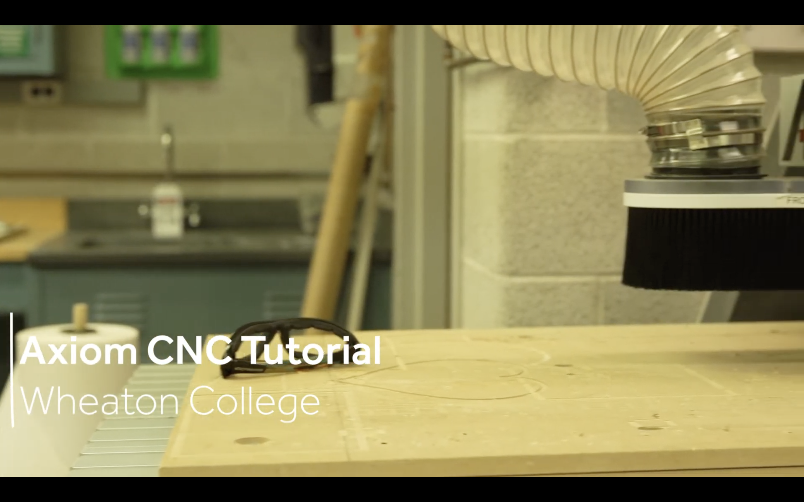

Template by W3.CSS
The assignment for week 5 was to document how to use the Axiom CNC from our training and to design a project that could be made with the software and equipment we've learned how to use.
To begin, I watched the Axiom tutorial that Madison sent to us which was on the assignment page on her website. This went over all of the important aspects of using the Axiom CNC, such as safety protocols, an overview of the parts and what they do, the software used to create projects, etc. 